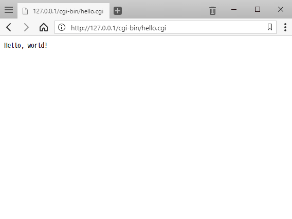

Apache HTTP Server CGI with Python
雖然 Python 有 Django 這套 web application 框架，但個人還是對只靠 Apache HTTP Server 的 CGI 就能在伺服端跑 Python 有興趣。
下載 Apache HTTP Server
官網 The Apache HTTP Server Project 只提供能直接在 Linux 編譯的原始碼，可在 Windows 執行的版本只到 2.2.25，所以要到 Apache Lounge 下載已編譯好的可執行檔。
我將下載回來解壓後的資料夾放在 C:\Program Files\Apache，且 Python 安裝在 C:\Program Files\Python。
設定組態
撰寫本文時，Apache 版本是 2.4，因此接下來的內容會針對這版號做設定。新版或有變動時，請自行調整。
Step 1:
用純文字編輯器開啟 C:\Program Files\Apache\conf\httpd.conf。
Step 2:
將 Define SRVROOT 的 "c:/Apache24" 改為 "C:/Program Files/Apache"。
沒有 SRVROOT 的話，則搜尋所有 "/Apache24"，全部改為 "C:/Program Files/Apache"。
Step 3:
在 Options Indexes FollowSymLinks 後面，隔個空白輸入 ExecCGI。
Step 4:
將 #AddHandler cgi-script .cgi 前面的 # 刪掉。
Step 5:
執行 C:\Program Files\Apache\bin\httpd.exe，啟動 Apache HTTP Server 服務。
補充
若執行後出現 AH00558 的錯誤訊息，請將 #ServerName www.example.com:80 改為 ServerName localhost:80
寫 CGI 程式來執行
Step 1:
新增純文字文件，輸入如下 Python 程式碼：
然後存檔到 C:\Program Files\Apache\cgi-bin，檔名為 hello.cgi。
Step 2:
開啟網頁瀏覽器，輸入網址：127.0.0.1/cgi-bin/hello.cgi，網頁會顯示：

程式寫錯的話，會顯示 Internal Server Error 網頁。[1]
後續調整
使用 *.py 副檔名
不喜歡 Python 程式檔使用 *.cgi 副檔名的話，可在 AddHandler cgi-script 後面加上 .py。
程式碼檔案跟網頁放在一起
程式碼檔案寫好，可以丟在 C:\Program Files\Apache\htdocs 當作網頁執行，不用真的丟在 cgi-bin 資料夾。
寫 CGI 的注意事項
寫 CGI 時，一定要先故意輸出一行空白，才開始寫 HTML 的內容。以為這行沒用而刪掉省略的話，反而會出現 Internal Server Error 訊息的網頁。
這是因為 CGI 使用空白行隔開 HTTP 的 header（標頭）和 content（內容），而我們前面的 Hello, world! 範例只有 content 沒有 header，才會顯得那行 print() 是多餘的。
來看正式一點的 Python CGI 程式，就會明白那行空白的用意了：